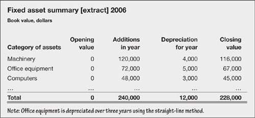
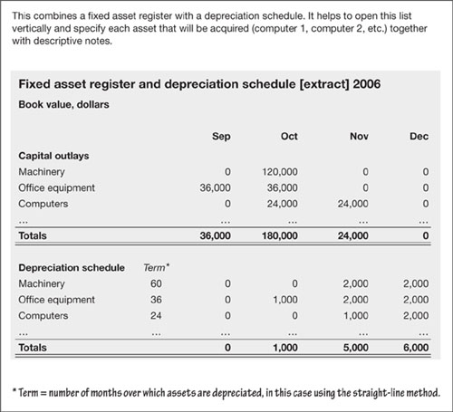

Ten hard questions to ask or be asked
Other records
Fixed assets have a life of their own and pop up in all manner of company records. Aside from the financial statements detailed in Fig. 11.1, three other examples are included below. See also Decision-making values, below.
In summary
Your business plans, annual budget, financial statements and other relevant reports will include a summary of your fixed assets, along the lines of Fig. 11.3.
Fig 11.3. Fixed asset summary
Fixed asset register
Somewhere, often with the people that manage your facilities, you will find a fixed asset register. This might be combined with the depreciation schedule and kept in the bean counter’s bottom drawer. Once a year, or more often if things are inclined to walk off the premises on their own, someone in a grey suit will climb over your production and operations people checking that a physical inventory of assets matches the register. (See Fig. 11.4.)
Fig 11.4. Fixed assets detailed
Depreciation schedule
For each asset, your accountant’s depreciation schedule will show the original acquisition cost, depreciation to date, the current net book value – and probably estimates of current or replacement value for insurance purposes. (See Fig. 11.4.)
Decision-making values
An excellent way to establish the actual or useful value of your fixed assets is to examine the summary, depreciation schedule and fixed asset register mentioned above. These all show the original cost, current book cost and the age of the assets. However, the written-down value is often way out of line with current or replacement values. You need to conduct a realistic appraisal to decide what is reasonable.
Market values. During your management review of the business, you will base decisions on market values. What is the underlying fair value of plant or machinery? Would it be better to sell it and use the proceeds elsewhere? Do you have competitive advantage because you have already written off the cost?
Insurance value. For your operational decisions, you will also have to decide whether to insure for current or replacement values.
A new lease of life
It frequently makes sense to lease rather than buy. This reduces the up-front demands on your cash flow and is particularly helpful for new businesses. Chapter 6 explained the arithmetic of comparing outright purchase against leasing. There are two categories of lease:
Finance lease – a lease where the risks and rewards of ownership are passed to the company using the things being leased to it.
Operating lease – all other leases.
As the name implies, a finance lease is a sneaky way of financing an asset. In essence, it produces a liability (to pay for the asset) with the intention of hiding it off-balance sheet. Many countries, and now international accounting standards, have introduced the generally accepted accounting principle that requires finance leases to be shown on the balance sheet as an asset with a matching liability. The starting value on both sides of the balance sheet is the net present value (see Chapter 6) of the minimum lease payments. Depreciation is over the shorter of the term of the lease or the expected useful life of the assets. The excess of annual lease payments over the depreciation charge is charged to the profit and loss account as interest.
On the other hand, operating leases are just charged to the profit and loss account as an expense (such as ‘computer leases’).
|